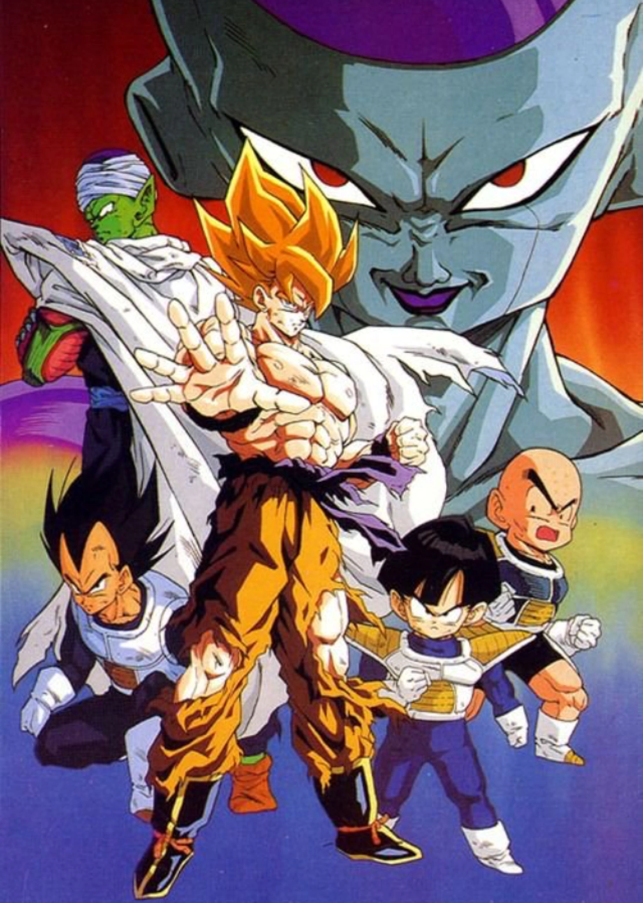
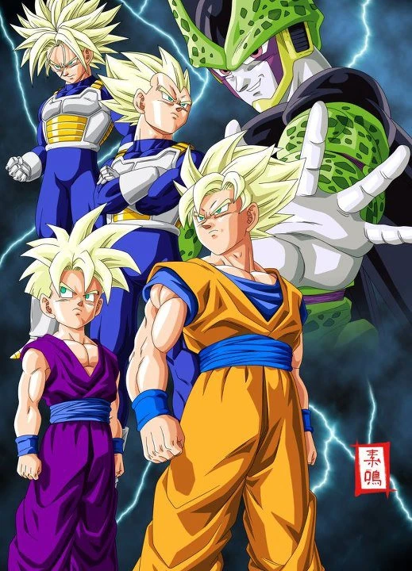
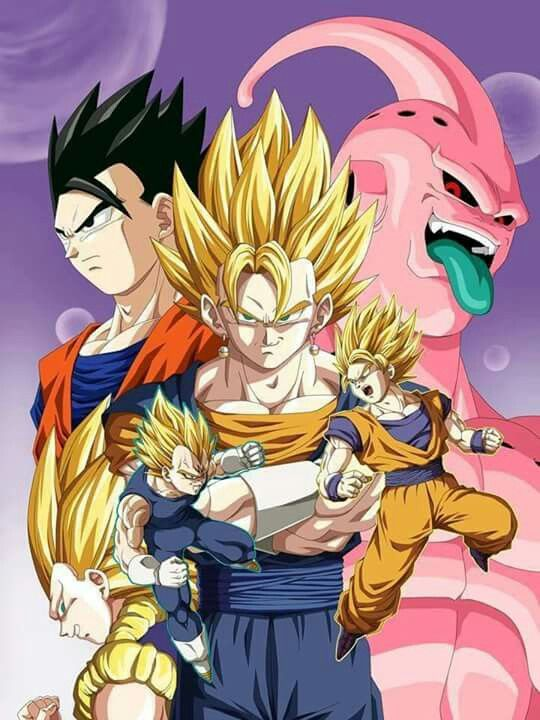

Saga Sayayines
La historia comienza con la llegada de Raditz a la Tierra, secuestra al hijo Gohan etc etc...

Episodios notables:
- La llegada de Raditz
- Goku entrena con Kaio-Sama
- La batalla en la Tierra contra los Saiyan
Saga Freezer
Después de enfrentar a los de saiyajin, los guerreros sobrevivientes descubren varias cosas importantes, primero que Piccolo no pertenecía a la tierra y que ...
Episodios notables:
- Vegata vs. Zarbon
- Goku vs. Freezer
- La explosión de Namek
Saga Cell
Cell quiere enfrentarse a Son Gokuh, y por ello, propone un juego: en 10 días celebrará el Cell Game, en él combatirá con todos aquellos guerreros que pretendan ...
Episodios notables:
- La activación de los Androides
- La transformación de Cell
- Gohan vs. Cell
Saga Majin Buu
Shin y Kibito les explican una historia sobre un brujo llamado Bibidi que un día creó un monstruo, llamado Majin Buu, muy peligroso, y que ahora, su hijo Babidi ...
Episodios notables:
- La revancha de Vegeta
- La idea de Dabura
- La técnica especial para Goten y Trunks